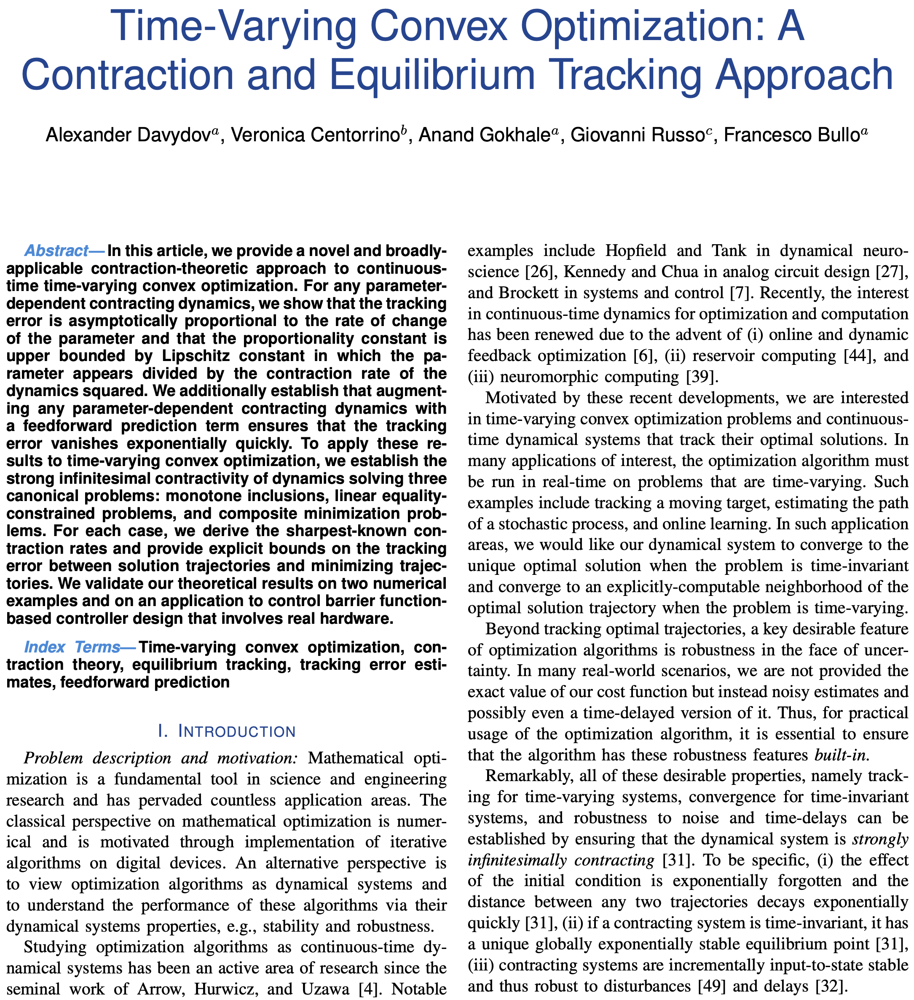

Professor Francesco Bullo
Francesco BulloDistinguished Professor, Department of Mechanical Engineering |
Links: CV, Orcid ID: 0000-0002-4785-2118, Google Scholar, ResearcherID, Scopus, dbpl
Selected Publications

|
 | ||
| Lectures on Network Systems, rev 1.7, Apr 2024. Book and slides: free download | Contraction Theory for Dynamical Systems, rev 1.2, Aug 2024. Book and slides: free download | Robust Implicit Networks via Non-Euclidean Contractions, Neurips, 2021, (pdf) | Equilibrium Tracking via Contracting Dynamics, Arxiv, 2023, (pdf) |
News
Workshop on ”Contraction Theory for Systems, Control, Optimization, and Learning” at the 2024 Conference on Decision and Control in Milan, Italy on Sunday, December 15, 2024
2024 Aug (not yet available): revision 1.2 of Contraction Theory for Dynamical
Systems is available
2024 Apr: seminars at MIT and Northeastern University: Slides and youtube talk
2024 Apr: revision 1.7 of Lectures on Network Systems is available
2024 Mar: Our submission the Neural-Sync MURI gets selected for funding, many thanks to all my current and former associates who made this possible!
2024 Jan: Seminars at Rutgers and Caltech: Slides
2023 Dec: Slides for Workshop on Emerging Challenges of Network-Enabled Control and Optimization,
CDC Workshop, Singapore, Dec 12, 2023
2023 Dec: Network Science for AI, White paper by the Funding Outreach Committee of
the Network Science Society, Sep 28, 2023
2023 Oct: Creative Convergence Workshop, At the Crossroads of the Arts, Ecology,
Neuroscience, and Control Engineering, Princeton University, Oct 27-28
2023 Oct: Minisymposium on Vistas in Control, UC Santa Barbara, Friday Oct 20th, 9:30am-noon. ESB 2001
2023 Sep: Minicourse on Contraction Theory. Tutorial slides downloadable from here
2023 Sep: Congratulations to Marco Coraggio for the IEEE CSS Italy Chapter Best Young Author Journal Paper Award for his work on Minimax Flow over Acyclic Networks!
2023 Jul: Distinguished lecture, 2023 SDG Global Summer School, Zhejiang University
2023 Jun: Our 2022 ACC article “Non-Euclidean Contractivity of Recurrent Neural Networks” with
Sasha Davydov and Anton Proskurnikov (link), receives the 2023 O. Hugo Schuck Best Paper Award from the American Automatic Control Council
Workshop on ”Contraction Theory for Systems, Control, and Learning” at the 2023 American Control Conference in San Diego, California, on Tuesday May 30, 2023
2023 May 11-12: Fagnani and Zampieri Fest
2023 Apr: plenary presentation at XIX Red Raider Symposium, Texas Tech University
2023 Mar: Kevin D Smith completes his PhD!
2023 Mar: revision 1.1 of Contraction Theory for Dynamical Systems is available
2022 Dec: Plenary presentation at 2022 IEEE CDC conference in Cancun, Mexico: slides (PDF)
2022 Nov: Minicourse on Contraction Theory: introductory slides (PDF) and
youtube lectures (10h in 4 lectures, with chapters)
2022 Oct: Neurips 2022: Implicit Flow Networks code available here
2022 Sep 23: keynote at International Symposium on Computational Intelligence and Industrial Applications
2022 Sep 22: guest speaker at Control Days Universita’ di Padova
2022 Sep 13: keynote at SIAM Workshop on Network Science (NS22)
2022 Sep: “Multistability and anomalies in oscillator models of lossy power grids” appears in Nature Communications
2022 Jul: Lecture series on “Network Systems and Contraction Theory” at the Bertinoro Summer School
New book Contraction Theory for Dynamical Systems, version 1.0, freely available!
These lecture notes provide a mathematical introduction to contraction theory for dynamical systems. Special emphasis is given to continuous-time differential equations arising in the study of network multi-agent systems, monotone dynamics, and semi-contracting systems. This document is in its initial version 1.0 on June 1, 2022. It is envisioned that future updates will include additional chapters.
These notes cover (i) the manifold properties of the induced norms and logarithmic norms of matrices, (ii) contracting dynamics over finite-dimensional vector spaces endowed with Euclidean and non-Euclidean norms, (iii) weakly-contracting dynamics and monotone dynamics, and (iv) semicontracting, perpendicularly and partially contracting systems. Numerous examples are presented in some detail, including Hopfield neural networks, systems in Lure’ form, interconnected contracting systems, gradient and primal dual flows of convex functions, Lotka-Volterra population dynamics, Daganzo traffic models, averaging flows, and diffusively-coupled synchronizing systems.
2022 May: Elected ASME Fellow, Class of 2022
2022 May: Visit to Tel Aviv University as Sackler Fellow. Slides on Contraction and Neural Networks (PDF)
2022 May: SICON Special Section on Mathematical Modeling, Analysis, and Control of Epidemics
2022 Mar: Workshop on Synchronization in Natural and Engineering Systems: slides
2022 Feb: Seminar at NYU “Perspectives on Contraction Theory and Neural Networks”:
slides in pdf format, 2x2 pdf,
and youtube video
2022 Feb: My slides
in honor of my former mentor Dr Elias Masry at the heartfelt
Professor Emeritus Elias Masry Memorial Symposium,
UC San Diego, February 5, 2022
2022 Feb: our Flow and Elastic Networks on the n-Torus: Geometry, Analysis, and Computation appears in SIAM Review!
2022 Jan: revision 1.6 of Lectures on Network Systems is available
(announcement on twitter and
linkedin)
2022 Jan: revision .93 of Lectures on Robotic Planning and Kinematics is available
2021 Dec: arxiv report on Robustness Certificates for Implicit Neural Networks via Mixed Monotonicity and Contraction
2021 Nov: arxiv report on Non-Euclidean Contractivity of Recurrent Neural Networks
2021 Nov: youtube video and pdf slides for CDC tutorial session: On contraction dynamics and algorithms and Slides
2021 Oct: Tutorial session at MECC 2021: Perspective on Epidemiological Models
and Convex optimization of the reproduction number
2021 Oct: arxiv report on From Contraction Theory to Fixed Point Algorithms on Riemannian and non-Euclidean Spaces
2021 Sep: Robust Implicit Neural Networks via Non-Euclidean Contractions is accepted at Neurips 21
2021 Sep: First lecture on Network Systems on youtube
2021 Sep: arxiv report on Convex Optimization of the Basic Reproduction Number
2021 Aug: revision 1.5 of Lectures on Network Systems is available
2021 Jul: Pedro Cisneros-Velarde comples his PhD!
2021 Apr: We posted our work on Non-Euclidean Contraction Theory and
Monotone Systems –
read all about robust nonlinear stability
2020 Dec: Invited seminar: my slides for
Perspectives on Epidemiological Models, their History and Analysis,
COVID Focus Session, 59th IEEE CDC, Jeju Island, Republic of Korea
2020 Dec: Xiaoming Duan and Elizabeth Huang complete their PhDs!
2020 Oct: plenary lecture at ICCAS 2020: Kuramoto Oscillators and Multistable Synchronous Power Flows
2020 Jul: revision 1.4 of Lectures on Network Systems is available
2020 May:
Special Section on “Mathematical Modeling, Analysis, and Control of Epidemics” in SIAM Journal on Control and Optimization
2020 Apr: UCSB, Center for Information Technology and Society, Webinar on “Current Epidemiological
Models: Scientific Basis and Evaluation” (PDF)
2020 Mar: Shadi Mohagheghi completes her PhD!
2019 Dec (Tue 12/10): Workshop on Learning, Decision, and Control over Networks at the upcoming IEEE CDC in Nice, France, organized by Vaibhav Srivastava and Fabio Pasqualetti. We celebrate many years of warm friendship, great fortune and collaborative research in systems and control!
2019 Nov: Robotic Surveillance Package now available on github, licensed under CC BY-NC-SA 4.0
2019 Nov: plenary lecture at SWARMS 2019:
Perspectives on Robotic Coordination and Bioinspiration
2019 Sep/Nov: seminars at DISMA Workshops, Politecnico di Torino:
Nonlinear network systems and
Parsimony in influence systems and structural balance
2019 Sep: Seminar series on “Network systems in science and technology”, Department of Mathematical Sciences, Politecnico di Torino, Italy
2019 Jul: revision 1.3 of Lectures on Network Systems is available
2019 Jun: Balance under pressure appears on Nature Communication
2019 Apr: Colloquia Roberto Tempo in Automatica, CNR and Politecnico di Torino (PDF)
2019 Mar: Elected Fellow of the Society of Industrial and Applied Mathematics (SIAM), Class of 2019, see also here
2019 Feb: Dario Paccagnan joins as Postdoctoral Scientist the UCSB Center for Control Dynamical Systems and Computation
2019 Jan: We posted our work on Multistable Synchronous Power Flows – read all about the winding partition of the n-torus
2019 Jan: revision 1.2 of Lectures on Network Systems is available
Columns in IEEE Control Systems as 2018 IEEE CSS President
Dec 2017: “People in Control” (pdf)
Feb 2018: “The Visible Values of Volunteering in the Hidden Technology World” (pdf)
Apr 2018: “On the developing World of Copyrights” (pdf)
Jun 2018: “On the Tools of Our Trade” (pdf)
Aug 2018: “Nurturing diversity and Reducing Implicit Evaluation bias” (pdf)
Oct 2018: “Getting It Write, Tips for Effective Communication” (pdf)
Dec 2018: “A Year in Review” (pdf)
2018 Oct: CS 595J Seminar in Network Science, Fall 2018
2018 Sep: Plenary lecture at 2018 SICE Conference, Nara, Japan
2018 Jul: Plenary at the 37th Chinese Control Conference, Wuhan, China
2018 Jun: Distinguished Scientist Award, President's International Fellowship Initiative, Chinese Academy of Sciences
2018 Jun: slides: “Robotic Routing and Stochastic Surveillance” (pdf), Kwan Chao-Chih Distinguished Lecture, Academy of Mathematics and System Science. Also delivered at Shenyang Institute of Automation and Beijing Institute of Technology
2018 Jun: slides: “Network Systems and Kuramoto Oscillators” (pdf), delivered at Northeastern University and Peking University
2018 Jun: slides: “On the Dynamics of Opinions and Influence Systems” (pdf), delivered at the Workshop on Distributed Control and Multi-Agent Systems, AMSS
2018 Jun: Keynote at the 30th Chinese Control and Decision Conference, Shenyang, China, Slides (PDF)
2018 May: my book Lectures on Network Systems reaches version 1. Book and slides: free download
2018 Jan: Francesco starts tenure as President of the IEEE Control Systems Society
2017 Nov: Stephen L. Smith is awarded a Canada Research Chair in Autonomous Systems
2017 Nov: Francesco is featured in the People in Control section of the IEEE Control Systems Magazine
2017 Oct: “How truth wins in opinion dynamics along issue sequences”
appears in the Proceedings of the National Academy of Science. see UCSB Current article
2017 Oct: Plenary at the 10th ASME Dynamic Systems and Control Conference, Tysons Corner, Virginia
2017 Sep: Fabio Pasqualetti wins ARO Young Investigator Award
2017 Sep: Talk at the Workshop on Emerging Applications of Control and System Theory, UT Dallas
2017 July: Plenary at the 14th SIAM Conference on Control & Its Applications, Pittsburgh
2017 July: UCSB “Automation & Control” ranks at #3 in the 2017 Shanghai Rankings, see also UCSB's press release
2017 June: Paper recognized as 2017 Google Scholar Classic Papers in the area of Automation and Control Theory
2017 June: Sean Wang wins Tirrel Award for Distinction in Undergraduate Research, UCSB COE
2017 June: Jeff Peters completes his PhD!
2017 May: Ketan Savla wins the 2017 Eckman Award, AACC
2017 Jan: Plenary lecture at the Indian Control Conference, Guwahati, Assam, India
2016 Dec: 2016 Outstanding Paper Award, IEEE Transactions on Control of Network Systems, for
Controllability Metrics, Limitations and Algorithms for Complex Networks
2016 Dec: Program Chair for the 55th IEEE Conference on Decision and Control (CDC 2016)
2016 Sep: John Simpson-Porco receives the 2015 CCDC Best Thesis Award
2016 Jul: Elected Fellow of the International Federation of Automatic Control (IFAC), Class of 2017
2016 Aug: Vaibhav Srivastava starts as Assistant Professor in Electrical and Computer Engineering at Michigan State University
2016 May: Distinguished lecture at the 28th Chinese Control and Decision Conference, Yinchuan, China
2016 Apr: 2016 Guillemin-Cauer Best Paper Award for
Kron Reduction of Graphs with Applications to Electrical Networks from the IEEE Circuits and Systems Society
2016 Feb:
Voltage collapse in complex power grids appears on Nature Communications; see announcement
2015 Dec: Plenary lecture at the IEEE Conference in Decision and Control, Osaka, Japan. here Slides (pdf)
2015 Dec: IEEE CSS Distinguished Member Award
2015 Nov: Lectures on Robotic Planning and Kinematics, by F. Bullo and S. L. Smith, v0.91
2015 Oct: Florian Dorfler wins the Best ME PhD Thesis, 2015
2015 Aug: MURI project on Quantitative Network-based Models of Adaptive Team Behavior:
announcement and project website
2015 May: Keynote, 15th Anniversary Celebration, Mechanical Engineering, UC Riverside
2015 Apr: 2015 UCSB Outstanding Mentor Award
2015 Apr: Giuseppe Notarstefano wins an ERC Starting Grant
2015 Apr: Rush Patel completes his PhD!
2015 Jan: Ketan Savla wins an NSF Career Award
2014 Oct: 50th Anniversary Celebration, UCSB Mechanical Engineering
2014 Oct: Plenary at XVI Latin American Congress of Automatic Control, Cancun, Mexico
2014 Summer: Synchronization and power sharing for droop-controlled inverters wins 2014 IFAC Automatica Best Paper Award
2014 Jul: Florian Dorfler starts as Assistant Professor at ETH Zurich
2014 May: SIAM News item covering our work on opinion dynamics
2014 Jan: UCSB NSF IGERT Program in Network Science
2013 Summer: Fabio Pasqualetti starts as Assistant Professor at UC Riverside
2013 Summer: Starting tenure as Mechanical Engineering Department Chair
2013 Spring: Gossip coverage control for robotic networks wins 2013 Best Paper Prize, SIAM Journal on Control and Optimization
2013 Spring: UCSB CCDC Workshop on Vistas in Control
2013 Winter: Fabio Pasqualetti wins the Best ME PhD Thesis, 2012-2013
2012 Fall: Fabio Pasqualetti and Vaibhav Srivastava complete their PhDs!
2012 Nov: Plenary speaker at the 12th DARS in Baltimore
2012 Sep: 2012 IFAC NECSYS in Santa Barbara
2012 Aug: Ketan Savla starts as Assistant Professor at USC
2012 Jul: Semi-Plenary speaker at the 20th MTNS in Melbourne